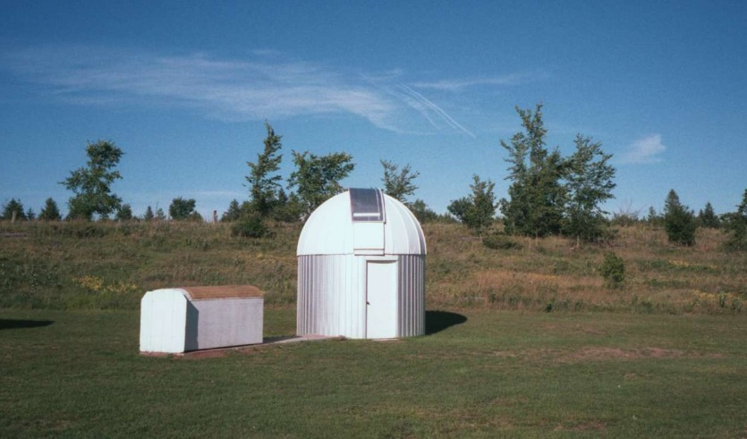

Last updated August, 2007
My wife Linda and I live in the rural part of Ottawa, Ontario, Canada. The population of Ottawa is about 1 million, but we are far enough away from the lights so that we have a nice dark sky at night. About 300 feet behind the house, I have built an observatory to house the main telescope. You can also see a roll-off cover for a 17.5-inch Dobsonian telescope in the picture below.

I currently have a number of home-made telescopes, several commercial telescopes, and another telescope being built.
See pictures of them here.
Several cameras were used to capture the planetary images depicted on these pages. Early on, starting in 1971, I took images of Mars with a film camera using various black-and-white and film emulsions. In 1989, a Hi-8 video camera was acquired and the early experiments of combining multiple frames into a single image were begun. The “modern” method of planetary imaging started in 2003 with a 3Com webcam, much lighter than a video camera, and with a CCD chip similar to that used in the video camera. The Philips ToUcam was soon added, with its superior user adjustment capability. Most recently (2007), a Lumenera SkyNyx 2.0 monochrome camera has been used, and this provides the best quality images so far.
Telescopes used for imaging have included a 6-inch f/12 Astrophysics refractor, and 8-inch Newtonian, and a C14.
Links below will take you to the images of the planets.
Mars, 2007 opposition
Mars, 2005 opposition
Mars, 2003 opposition
Mercury
Venus
Venus transit
Jupiter
Check out this cool animation of Jupiter's rotation.
The sections below are under construction.
{kind=link}